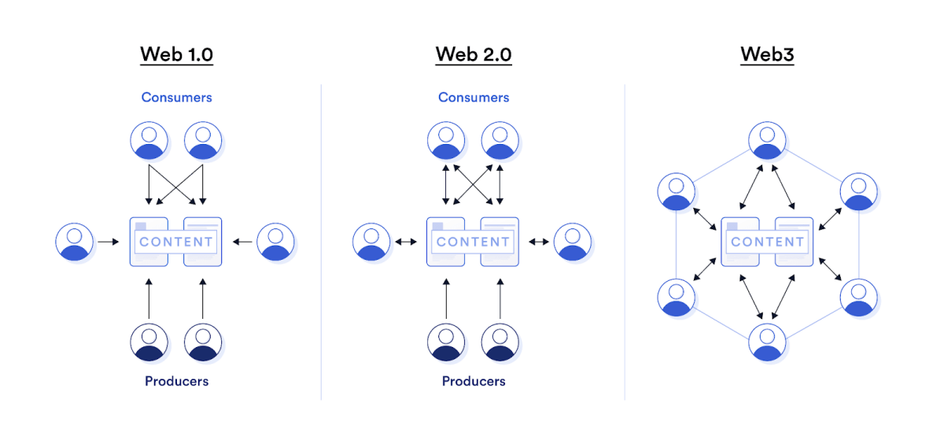

Автор: Гордейчик Даниил ИДМ-24-08
С развитием ИКТ и их интеграцией в повседневную жизнь понимание состояния и перспектив Интернет-технологий (ИТ) важно для анализа будущих трендов. ИТ лежат в основе инноваций, влияя на образование, здравоохранение, транспорт и бизнес. Они способствуют глобализации, упрощают доступ к информации и усиливают связи между людьми. ИТ играют ключевую роль в цифровой экономике, поддерживая обработку больших данных для оптимизации процессов и повышения эффективности. Концепция «Индустрия 4.0» отражает интеграцию цифровых технологий, таких как IoT и автоматизация, в производство, создавая гибкие и автономные системы. Web 3.0, или семантический веб, использует ИИ, блокчейн и умные контракты для создания интеллектуальных сервисов. Текущие исследования ИТ подчеркивают их возрастающее влияние на общество и экономику, делая их понимание важным в современном контексте.
Web 3.0 — это новая фаза интернета, ориентированная на создание интеллектуальной и автономной сети. Она основывается на децентрализации, предоставляя пользователям больший контроль над данными и взаимодействиями. Технологии Web 3.0 обеспечивают открытую, связанную и интеллектуально развитую среду, способствуя равномерному распределению власти, пользовательскому участию в принятии решений и преобразованию отраслей, таких как финансы, социальные сети и игры.
На текущий момент, Web 3.0 все еще находится на этапе активной разработки и внедрения, но уже имеет ряд значимых достижений и проектов, которые демонстрируют его потенциал. Разработчики и исследователи по всему миру работают над созданием новых протоколов, платформ и приложений, которые могут эксплуатировать преимущества децентрализации, улучшенной безопасности и повышенной интеграции данных.
Блокчейн и децентрализованные технологии.Основой для многих приложений Web 3.0 являются блокчейн-технологии, которые обеспечивают безопасность, транспарентность и децентрализацию данных. Эти технологии используются для создания децентрализованных финансовых сервисов (DeFi), умных контрактов и децентрализованных автономных организаций (DAO).
Расширение возможностей машинного понимания содержания веба позволяет создавать более умные и адаптивные веб-приложения. Семантический веб использует технологии искусственного интеллекта и машинного обучения для анализа и интерпретации данных на глубоком уровне, что улучшает поиск информации, персонализацию и интерфейсы пользовательского взаимодействия.
Web 3.0 предполагает использование распределенных систем для хранения и обработки данных, что увеличивает скорость доступа и уменьшает зависимость от централизованных серверов. Такие технологии, как IPFS (InterPlanetary File System), предоставляют возможности для более надежного и децентрализованного хранения данных.
В рамках Web 3.0 большое значение придается возможностям взаимодействия различных платформ и приложений. Это обеспечивает более гладкую интеграцию сервисов и данных, что способствует созданию единой, мультифункциональной цифровой экосистемы
Продвинутые решения по управлению цифровой идентичностью позволяют пользователям контролировать свои персональные данные и обеспечивать их безопасность. Технологии самоуправляемой идентификации (SelfSovereign Identity, SSI) демонстрируют новые подходы к управлению личной информацией в цифровом пространстве.
Блокчейн — это децентрализованная технология, или распределённая база данных, которая состоит из цепочки блоков. Каждый блок содержит пакет транзакций, которые подтверждены всеми участниками сети и постоянно записаны, что обеспечивает прозрачность и неизменность данных [2]. Основная идея блокчейна заключается в том, что данные записываются последовательно, и каждый новый блок связан с предыдущим через криптографическую хэш-функцию, что делает историю данных невозможной для подделки без одновременного изменения всех последующих блоков в цепочке на всех копиях базы. В чём заключается важность технологии блокчейн? Традиционные технологии баз данных создают ряд проблем, связанных с учетом финансовых операций. Рассмотрим пример с продажей недвижимости. После передачи денег право собственности переходит покупателю. Как покупатель, так и продавец могут самостоятельно регистрировать денежные операции, но ни одной из сторон нельзя доверять. Получив деньги, продавец может легко утверждать, что он их не получил, а покупатель может утверждать, что деньги отправлены, даже если это не так. Во избежание возможных юридических проблем доверенная третья сторона должна контролировать и подтверждать транзакции. Присутствие этого центрального органа не только усложняет сделку, но и создает единственную уязвимую точку. От нарушений в центральной базе данных пострадают обе стороны. Блокчейн предвосхищает подобные проблемы путем создания децентрализованной, защищенной от несанкционированного доступа системы для записи операций. В случае сделки с недвижимостью блокчейн создает единый реестр для покупателя и продавца. Все транзакции должны быть одобрены обеими сторонами и автоматически обновляться в их реестрах в режиме реального времени. Любое несоответствие в истории транзакций отразится во всем реестре. Эти свойства технологии блокчейн сделали ее популярной в различных секторах. Например, они использовалась при создании цифровой валюты Bitcoin.
Основные элементы блокчейна:

Примерный алгоритм работы:
ИИ в Web 3.0 помогает анализировать большие объёмы данных, прогнозировать тренды и персонализировать взаимодействие пользователей.
Web 3.0 предлагает радикальные изменения в том, как технологии интегрируются в повседневную жизнь. Основные направления — децентрализация, использование блокчейна и искусственного интеллекта — открывают новые возможности для бизнеса и общества, делая взаимодействие более открытым и эффективным.